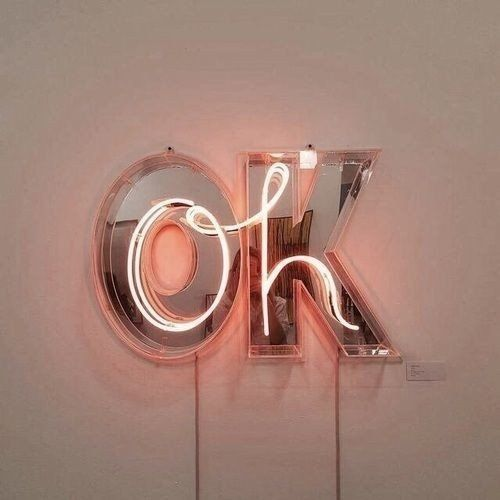
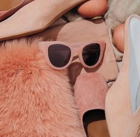

Peachy Place
!Hey honey! bienvenido a Peachy Place 🍑
|  |  |  |
cariño tu eres pura magia, por eso en este blog lleno de brillo vamos hacer muchas pijamadas de chicas para hablar de maquillaje, moda y todo lo que nos gusta y como cualquiera niña soñamos con ser princesas y aquí descubriremos que hasta nos podemos salvar solas!! encontraras todo lo que se llama vida... pero, que es la vida? al menos para mí es algo demasiado maravilloso para ser real, lo bueno y lo malo es que es una montaña rusa llena de sorpresas o talvez... un arcoíris mágico en donde encuentras tantos tesoros y cosas hermosas que hacen brillar tanto tus ojos como cuando miras a la persona que te gusta, porque la vida no es como uno de esos cuentos encantados donde un príncipe salva a una princesa, hermoso no?.. si no que tenemos que vencer nuestros propios miedos para vivir una verdadera historia encantada.
así que este es mi diario y el tuyo un lugar lleno de amor, rosa, y miles de pensamientos con historias que cautivan y es inevitable no querer compartirlas, gracias por traer brillo al mundo!!
llenemos de brillo esta vida de cuento XOXO
𝕬𝖇𝖔𝖚𝖙 𝖒𝖊

Hola!! soy Caro, una extraña que te escribe como si te conociera toda la vida, soy una pequeña persona con muchas ganas de compartirte lo que se, para que aprendamos juntos, y espero inspirarte mucho para que llenemos este blog de puro amor.
mi color favorito son todos jaja pero a quien miento amo el rosado, mi hobbie es repetirme series romanticas y ver peliculas de muñequitos, no me gusta la cocacola, prefiero escuchar aunque preferiria hablar un poco mas,me encanta el arte, disfruto un montón de bailar, amo tomar fotos y escribir mucho, soy una chica, que hace sus tareas, ama a los perritos y sonríe a los bebes, soy amante de las redes sociales, la moda, lo trending y el maquillaje, soy súper exigente en todo y me esfuerzo por ser lo mejor para mí, para Dios, y para el mundo prefiero la idea más creativa a la correcta y para mí siempre existirán los finales felices, muy felices como yo. me paso la vida sonriendo y ya quiero que bailemos juntos.
Con mucho amor caro 🥰💛
♥ ♥ ♥ ♥ ♥ ♥ ♥ ♥ ♥ ♥ ♥ ♥ ♥ ♥ ♥ ♥ ♥ ♥ ♥ ♥ ♥ ♥ ♥ ♥ ♥ ♥ ♥ ♥ ♥ ♥ ♥ ♥ ♥ ♥ ♥ ♥ ♥ ♥ ♥ ♥ ♥ ♥ ♥ ♥ ♥ ♥ ♥ ♥ ♥ ♥ ♥ ♥
MODA EN TIEMPOS DE coronavirus 👑🦠
¿como convinar tu tapabocas con tu mejor oufist?

OMG!! este es mi primer articulo, y como el covid nos obligo a ponernos un tapabocas con el que casi no respiramos aqui te traigo unos de los mejores diseños que he encontrado y la forma mas facil de convinar tus oufists, te veras fantastica!
priimero que todo te comparto este diseño de cubrebocas de mi diseñadora favorita, lirika mastoshi, es divino!!

este me parece super original y divertido, es lo mas cool!

por ultimo la forma mas facil de convinar tu tapabocas con tu ootd es con uno negro, se ve genial con todo

espero que te haya gustago mucho, nos vemos en la proxima!:3